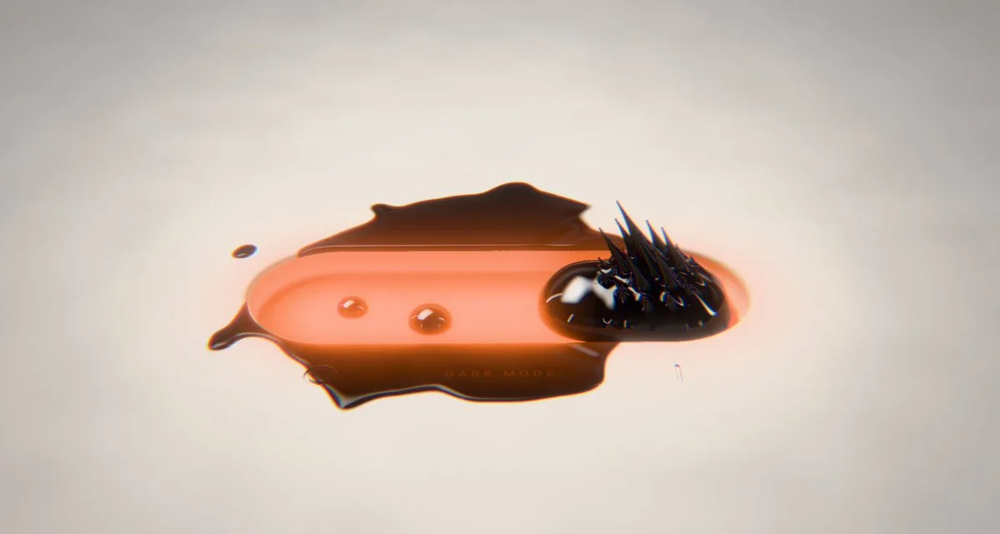

一枚胶囊形开关躺在浅灰底上：轨道里是温热的橘色液体，右侧一颗黑色液珠顶出尖刺，多余的流体已经漫过边缘，底下隐约写着 DARK MODE。作者 @argofowl 说这是用 Opus 5.5 做的铁磁流体开关，没有 Three.js，也没有任何库，整个作品就是一个 HTML 文件，连声音都在浏览器里生成。帖里附的链接只指向这段视频；截至 2026-11-10，本页没有找到可以打开的 HTML，也没有许可证文本。

这是一件什么作品
就作者自己的说法，这是一个用 Claude Opus 5.5 写成的网页开关：不用 Three.js，也不引入其他库，全部放在一个 HTML 文件里，声音也在浏览器里当场生成。这些都是作者自报，本页没有源码可以核对。⚠️
从封面静帧能确认的，是它的样子，而不是实现。开关是一枚圆角胶囊，处在类似「开」的位置——深色液珠停在右侧，表面高光清晰，顶上伸出一丛细而硬的黑刺，像铁磁流体在磁场里常见的尖峰。轨道里的橘色液体带着两颗气泡，并从左右两端漫出轨道，在浅底上积成一摊带倒影的深色流体。轨道下方有很小的「DARK MODE」字样。这一帧只说明它被做成一枚深色模式拨杆，液体被允许溢出控件的边界；不能据此判断动画怎么走、声音是什么，也不能证明它确实是单文件、零依赖。
作者的个人站点 fowllabs.com 在 2026-11-10 的公开首页上，介绍的是 Mac 应用，没有出现这件开关，也没有演示链接。
原帖全文
以下为作者英文短帖的中文译文。原帖不是 X 长文，正文只有两句，附件是视频；文末的短链指向这段视频，而不是一份可以打开的 HTML。
用 Opus 5.5 做的铁磁流体开关。
不用 Three.js，不用任何库，就是一个 HTML 文件；连声音都是在浏览器里生成的。
作者：@argofowl（显示名 🥔🥔🥔）；发布：2026-11-10 03:00（新加坡时间，UTC+8）。原帖附视频，点击观看。
英文原文
ferrofluid toggle made with opus 5.5
no three.js, no libraries, just one html file, even the sounds are generated in the browser
线程里还能看到什么
在可检索的作者本人回复里，只有一条，而且不是在谈这件开关。大约四十二分钟后，他回复 @notjazii，说自己当时在看电影，对评论区里同时出现的 Fable 5.2 感到困惑，随后写了一句 LESSSGOOOOOOOO。查看这条回复。同一小时前后，Anthropic 发布了 Claude Fable 5.2，线程里不少回复是在催他改用新模型，而不是在问开关本身。
有人直接问网址，说「光看视频不太相信」。到本页核对时，作者没有在可检索的回复里给出演示或源码地址。另有一条评论把封面里能看见的细节说得很准：「液体漫出开关，是我最喜欢的细节。用这种方式让深色模式显得可触，很有意思。」这是他人看过视频后的观察，不是本页自己看片后的结论。
许可与可复现性
作者没有在帖中给出仓库、Gist 或演示页，也没有声明许可证。2026-11-10 用作者账号检索含 ferrofluid、toggle 或 html 的原发帖，只找到这一条；检索同一对话线程，也没有找到可打开的 HTML 链接。fowllabs.com 的公开首页同样没有这件作品。按版权分级，本页只做导读，并收录作者本人短帖的全文中译；不转载视频，也不把尚未公开的源码写成已经核过的实现。
传播数据（快照）
2026-11-10 经 X 接口读取时，原帖约 1.96 万次浏览、446 个赞、17 次转发、21 条回复、203 次收藏，引用为 0。这些数字会变，只作当时记录，不是效果评测。
核实边界与署名
- 这是以该开关为中心的导读，并收录作者本人英文短帖的全文中译。未找到可交互演示或源码，本页不转载视频。
- 「用 Opus 5.5 做成」「无 Three.js、无任何库、单一 HTML 文件」「声音在浏览器里生成」均为作者自报，⚠️ 未用源码核对。
- ⚠️ 未下载或观看约 32.3 秒的附件视频。封面帧只代表其中一帧，不能代替完整演示，也不能证明实现方式。
- ⚠️ 作者简介所写「伦敦」「曾在 @csm_news、@ual」为自报，未独立核实。
- 线程里关于液体溢出与深色模式的评论，是他人观察，本页未亲自看片验证。